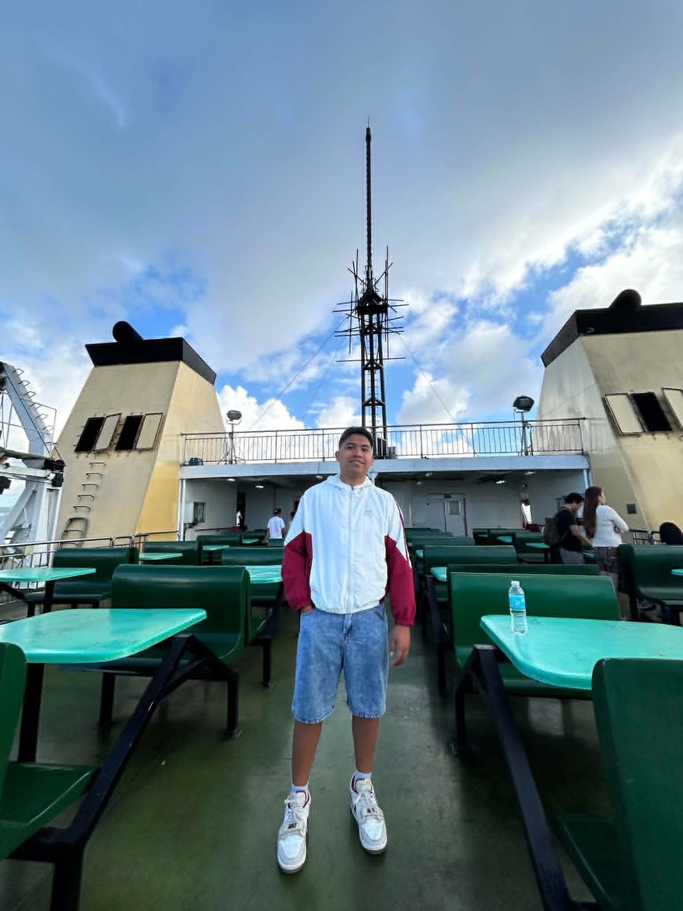

About Myself

Hello! My name is John Taub. I am a student at Saint Michael College of Caraga and I enjoy learning web design, technology, and creative writing. I am excited to share my personal story, interests, and favorites.
Birthdate: July 18, 2008
Address: Brgy. 4, Nasipit, Agusan del Norte, Philippines
Job: Student / Web Design Learner
Saint Michael College of CaragaTel. Nos. +63 085 343-3251 / +63 085 283-3113
Fax No. +63 085 808-0892
Brgy. 4, Nasipit, Agusan del Norte, Philippines
www.smccnasipit.edu.ph
Childhood
I grew up in a small coastal town and spent most of my childhood playing outdoors with friends and exploring local markets. Early on, I discovered a love for drawing, storytelling, and reading books about science and nature.
Teenage Life
As a teenager, I started learning how to use a computer and explore basic programming. School projects helped me build confidence in organizing information, creating presentations, and working with classmates on creative tasks.
Adulthood
In the future, I hope to continue developing web skills and possibly work in a field that combines design, technology, and storytelling. My goal is to create websites that are both useful and enjoyable for others.